Se encuentra en la región de la torre del cañón, muy cerca de la Posta del cañón (un poco más al norte), antes de la entrada al desierto.
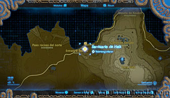
Nada más comenzar verás una esfera en un pedestal. Cógela y deposítala en otro pedestal más pequeño que hay a tu derecha para provocar una corriente eléctrica que abra la puerta (igual que está colocada otra esfera en el pedestal izquierdo).
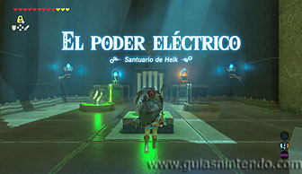
Sigue avanzando y verás otro pedestal sin esfera, en el extremo opuesto puedes encontrar un miniguardián y tras él, una esfera colgada del techo con una cuerda (en la pared verás una puerta cerrada que de momento no puedes abrir). Dispara una flecha a la cuerda para que caiga y así poderla llevar al pedestal.
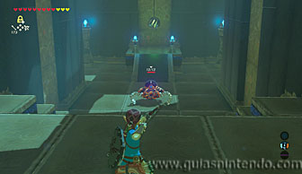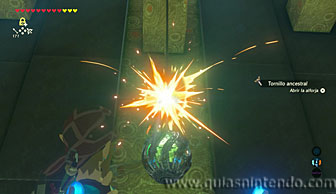
Al colocarla en su respectivo interruptor se pondrá en marcha una cinta transportadora y el bloque que te impedía pasar caerá. Sigue el camino abierto para llegar a un cofre que contiene una llave pequeña. Con ella podrás abrir la puerta que había junto a los interruptores.
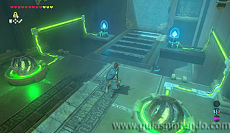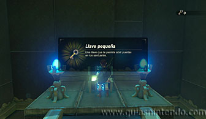
Una vez abierta la puerta podrás ver otro miniguardián, derrótalo para llegar a la sala final. Verás dos piscinas con agua, una tiene un interruptor activado, pero la otra no lo está. Tienes que mover uno de los bloques de metal con el módulo imán para acercarlo al otro. Si los acercas la electricidad pasará de uno a otro por el agua y encenderá el interruptor. Así se abrirá la puerta de salida.
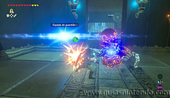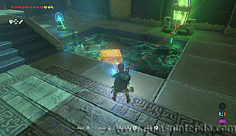
El cofre lo encontrarás antes de dirigirte al altar. Date la vuelta sin pasar por la puerta que has abierto y mira hacia arriba para localizarlo. Bájalo con el módulo imán y podrás abrirlo para conseguir una Daga gerudo.
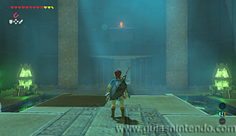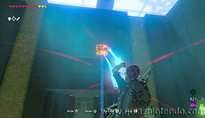
Cuando llegues al altar del santuario podrás examinarlo para obtener un símbolo de valía.
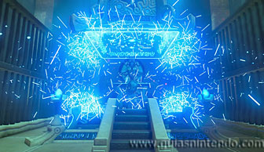